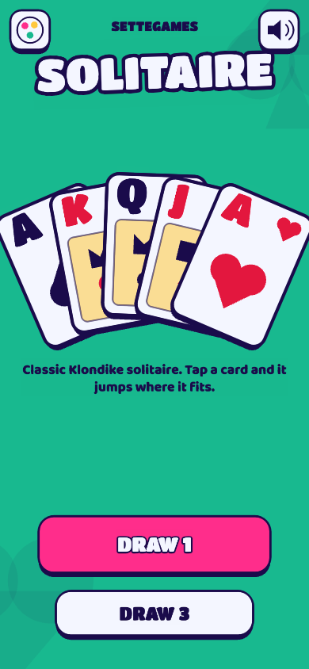

Minigame · free in your browser
Play Klondike Solitaire online
Classic Klondike solitaire. Tap a card and it jumps where it fits.
Free, no sign-up, right in your browser. Also on Telegram: @SetteGamesBot.
Weekly leaderboard
| Play to get on the leaderboard. |
Play next
 Perfect TimerStop the timer at exactly 10 seconds. Easy, until the timer disappears.
Perfect TimerStop the timer at exactly 10 seconds. Easy, until the timer disappears. SnakeSwipe to steer, eat to grow, never bite your own tail. The classic snake game, faster with every bite.
SnakeSwipe to steer, eat to grow, never bite your own tail. The classic snake game, faster with every bite. MinesweeperClear the field without touching a mine. Numbers tell you how many are hiding next door.
MinesweeperClear the field without touching a mine. Numbers tell you how many are hiding next door. SudokuClassic 9×9 sudoku with a fresh puzzle every game. Three levels, pencil notes, beat the clock.
SudokuClassic 9×9 sudoku with a fresh puzzle every game. Three levels, pencil notes, beat the clock. Three Seconds FlatStop the timer at exactly 3 seconds. Five quick rounds, and in Blind mode the dial goes dark after 1 second.
Three Seconds FlatStop the timer at exactly 3 seconds. Five quick rounds, and in Blind mode the dial goes dark after 1 second. Seven SecondsStop the timer at exactly 7 seconds. Three rounds, and the dial goes dark halfway.
Seven SecondsStop the timer at exactly 7 seconds. Three rounds, and the dial goes dark halfway. 2048Swipe, merge equal tiles and build 2048. One more move, always.
2048Swipe, merge equal tiles and build 2048. One more move, always. Reaction Time TestWait for green, then tap as fast as you can. Five tries, one time in milliseconds.
Reaction Time TestWait for green, then tap as fast as you can. Five tries, one time in milliseconds.How to play Solitaire
Solitaire is the classic Klondike card game you can play for free in your browser or on Telegram, with no download and no sign-up. Tap a card and it jumps to the best spot, or drag it where you want. Build the four foundations from Ace to King, choose relaxed Draw 1 or tougher Draw 3, then challenge a friend to beat your score on the weekly leaderboard.
- The goal is to move all 52 cards to the four foundations at the top, one per suit, from Ace up to King.
- In the seven columns, build down in alternating colors: a red 6 goes on a black 7.
- You can move a whole run of face-up cards at once. Only a King (or a run starting with a King) can fill an empty column.
- When a face-down card is left on top of a column, it flips over by itself.
- Tap the deck to turn over 1 card (Draw 1) or 3 cards (Draw 3). When it runs out, tap again to flip the pile back.
- Tap any card to move it automatically, or drag it to the spot you choose. When every card is face up, Auto-finish completes the game.
FAQ
Is this solitaire free to play?
Yes. You play the full game for free in your browser or on Telegram, with no download and no account. Optional color themes are cosmetic only and never change the game or your score.
What is the difference between Draw 1 and Draw 3?
In Draw 1 each tap on the deck turns over one card, so you see every card on each pass: most deals can be won. In Draw 3 you turn three cards at a time and can only play the top one, which makes the game much harder. Both modes allow unlimited passes through the deck, and each mode has its own best score and leaderboard.
What is the best strategy for Klondike solitaire?
Flip face-down cards as early as possible, starting with the longest columns: they hide the most cards. Prefer moves from the columns over plays from the deck, and don't empty a column unless you have a King ready to move into it.
Should I always move cards to the foundations right away?
Aces and twos, always. Higher cards can wait: a black 5 still in a column may be the only place where you can park a red 4 and free the card underneath. Move them up when they are no longer useful as a landing spot.
How is the score calculated? Can I undo?
You get 10 points for each card on a foundation, 5 for each card moved from the deck to a column and 5 for each face-down card you flip. Flipping the deck back costs points, and so does each undo. Win the game to earn a time bonus: the faster you finish, the bigger it is. Scores are checked by replaying your moves on our server.
Can every game of solitaire be won?
No. A small share of Klondike deals cannot be solved whatever you do, and many more are lost by one early choice. If you run out of useful moves, end the game: your score still counts for the leaderboard.
Do I need an account?
No. On the leaderboard you appear with an anonymous name (an animal and a number), or with a nickname you choose at the end of a game.
Can I put this game on my website?
Yes, for free. Copy this code into your page:
Is it free?
Yes, it is free to play. Inside Telegram you can optionally buy cosmetic color themes (they never change scores): see the Terms.